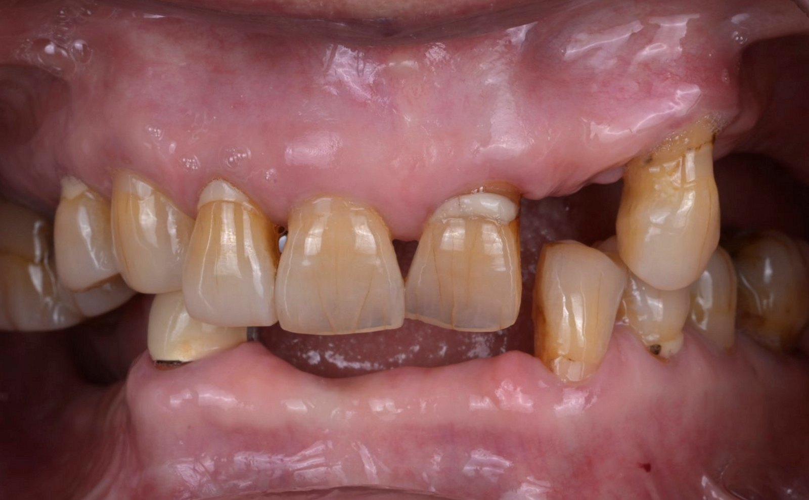
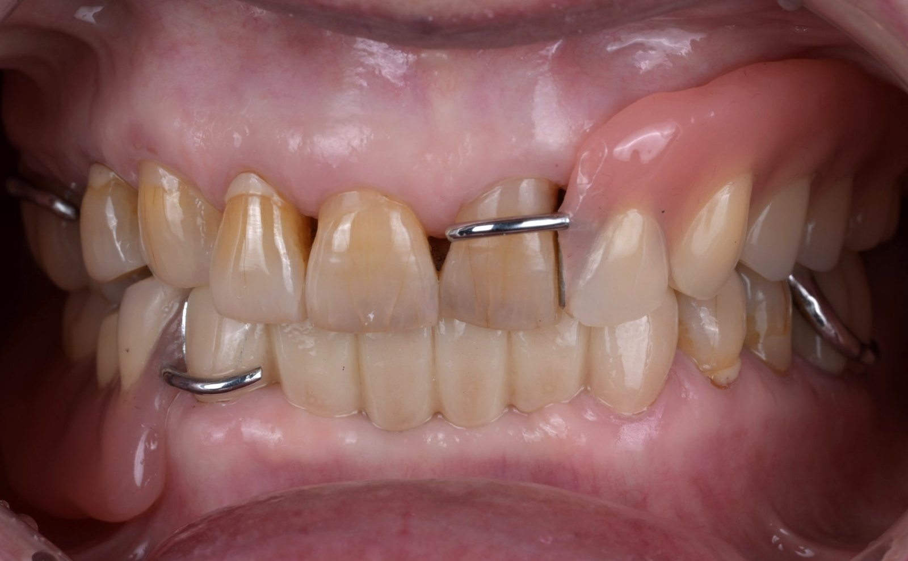
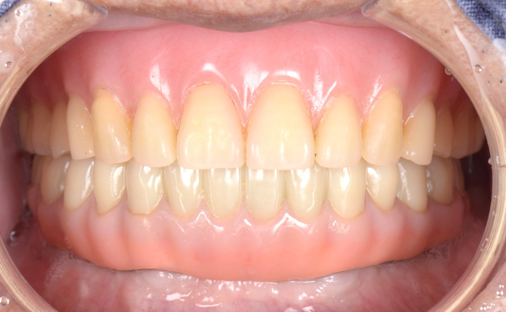
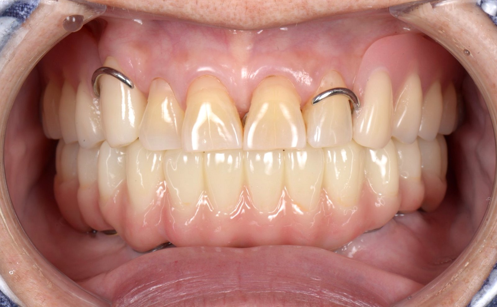

FROM RESTORATION TO PROSTHESIS
수복치료 다음 단계,
보철치료
자연치아 보존 수복이 손상 범위에 따라 레진 → 인레이 → 온레이 → 오버레이로 이어지듯, 보철치료도 치아를 잃은 범위에 따라 단계가 나뉩니다. 치아가 남아 있지만 크게 손상되었다면 크라운, 치아를 잃었다면 그 범위에 따라 브릿지 → 부분틀니 → 완전틀니, 그리고 임플란트 위에 고정하는 All-on-X로 이어집니다.
BY THE NUMBER OF MISSING TEETH
잃은 치아의 범위에 따라
선택이 달라집니다
같은 개수의 치아를 잃었더라도 빠진 위치, 남은 치아의 건강, 잇몸뼈의 양, 전신 건강에 따라 맞는 방법이 달라집니다. 아래는 일반적인 기준이며, 정밀 검사 후 가능한 방법들의 장단점을 함께 비교해 결정합니다.
모두 잃었거나 남은 치아를
살리기 어렵고, 고정식을 원하는 경우
All-on-XAll-on-4 · All-on-5 · All-on-6
풀아치 임플란트 · 고정식 임플란트 틀니
임플란트 4~6개 위에 한 줄 전체를 고정합니다. 빼지 않는 치아입니다.
CROWN
크라운
치아 머리 전체를 얇게 다듬고 그 위를 감싸 씌우는 보철입니다. 남은 치아가 너무 적거나 금이 넓게 간 경우, 신경치료 후 치아가 많이 약해진 경우에 치아가 쪼개지지 않도록 보호합니다. 지르코니아, 리튬 디실리케이트(e.max) 같은 세라믹이나 금 등 치아의 위치와 씹는 힘에 맞는 재료를 고릅니다.
장점
- 치아 전체를 감싸 크게 손상된 치아도 보호할 수 있습니다.
- 모양과 색, 맞물림을 새로 설계할 수 있습니다.
- 내 치아 뿌리를 그대로 살려 씁니다.
고려할 점
- 치아를 사방으로 깎아야 해 삭제량이 가장 많습니다.
- 경계 부위에 다시 충치가 생기지 않도록 관리가 필요합니다.
- 오버레이로 지킬 수 있다면 그쪽을 먼저 권합니다.
BRIDGE
브릿지
빠진 치아 양옆의 치아를 다듬어 기둥으로 삼고, 빈자리에 가짜 치아를 다리처럼 이어 붙여 고정하는 보철입니다. 주로 한두 개의 치아를 잃었을 때 쓰이며, 수술 없이 비교적 짧은 기간에 고정식으로 씹는 기능을 되찾을 수 있습니다.
장점
- 잇몸 수술 없이 치료할 수 있습니다.
- 고정식이라 빼고 끼울 필요가 없고 이물감이 적습니다.
- 양옆 치아에 이미 크라운이 필요하다면 함께 해결됩니다.
고려할 점
- 건강한 양옆 치아를 깎아야 할 수 있습니다.
- 기둥 치아가 빠진 치아의 힘까지 나눠 받습니다.
- 가짜 치아 아래를 치실 등으로 따로 닦아야 합니다.
- 기둥 치아 하나에 문제가 생기면 전체를 다시 해야 할 수 있습니다.
양옆 치아가 건강하다면 이웃 치아를 깎지 않는 임플란트와 함께 비교해 설명드립니다.
REMOVABLE PARTIAL DENTURE
부분틀니
여러 개의 치아를 잃었지만 일부 치아가 남아 있을 때, 남은 치아에 고리(클래스프)를 걸어 고정하고 빈자리를 인공치아로 채우는 틀니입니다. 금속 뼈대로 얇고 단단하게 만들며, 씹는 힘을 남은 치아와 잇몸이 나누어 받도록 설계하는 것이 오래 쓰는 열쇠입니다.
장점
- 수술 없이 여러 개의 빈자리를 한 번에 채웁니다.
- 남은 치아를 많이 깎지 않습니다.
- 나중에 치아를 더 잃어도 인공치아를 추가해 고쳐 쓸 수 있습니다.
고려할 점
- 빼고 끼우는 장치라 적응 기간이 필요합니다.
- 고정식보다 씹는 힘이 약하고, 위치에 따라 고리가 보일 수 있습니다.
- 고리를 거는 치아에 부담이 가므로 관리와 정기 점검이 중요합니다.
고리가 보이는 것이 부담스럽거나 더 단단한 고정이 필요하면, 임플란트를 일부 함께 써서 틀니를 안정시키는 방법도 검토합니다.
CASE

치료 전 · 2026.06
치료 후 · 2026.09COMPLETE DENTURE
완전틀니
위나 아래의 치아를 모두 잃었을 때, 잇몸과 잇몸뼈 위에 얹어 사용하는 틀니입니다. 잇몸에 밀착되는 정도와 위아래 틀니의 맞물림이 편안함을 좌우하기 때문에, 본을 뜨고 턱의 위치를 기록하고 시적(미리 끼워 보기)하는 과정을 단계마다 꼼꼼히 거칩니다.
장점
- 수술 없이 치아 전체를 되찾을 수 있습니다.
- 무너진 입술과 볼의 윤곽을 함께 회복합니다.
- 다른 방법에 비해 비용 부담이 적습니다.
고려할 점
- 자연치아나 고정식 보철보다 씹는 힘이 크게 약합니다.
- 아래 틀니는 혀와 볼의 움직임 때문에 들뜨기 쉽습니다.
- 위 틀니는 입천장을 덮어 맛과 온도 감각이 둔해질 수 있습니다.
- 잇몸뼈가 점차 줄어 몇 년마다 안쪽을 다시 맞추는 조정이 필요합니다.
아래 틀니가 자꾸 움직인다면 임플란트 2개 정도를 심어 틀니를 단추처럼 고정하는 임플란트 틀니(오버덴처)로 안정감을 크게 높일 수 있습니다.
IMPLANT-SUPPORTED FULL-ARCH
All-on-X
올온포 · 풀아치 임플란트 · 전체 임플란트 · 고정식 임플란트 틀니
아래턱 치아를 모두 잃었거나 남은 치아를 살리기 어려울 때, 아래턱에 임플란트 4~6개를 심고 그 위에 치아 한 줄 전체를 연결해 고정하는 치료입니다. 틀니처럼 빼지 않고, 혀와 볼이 움직여도 들뜨지 않으며, 씹는 힘을 임플란트가 받아 줍니다. 잇몸뼈의 양과 위치, 씹는 힘에 따라 임플란트의 개수를 정하며 이를 각각 All-on-4 · All-on-5 · All-on-6이라고 부릅니다. 위드치과보철과는 아래턱(하악) All-on-X를 진료합니다.
같은 치료를 흔히 올온포(All-on-4), 풀아치 임플란트, 전체 임플란트, 고정식 임플란트 틀니라고도 부릅니다. 학술적으로는 '임플란트 지지 고정성 전악 보철'이라고 하며, 빼고 끼우는 '임플란트 틀니(오버덴처)'와 달리 환자가 직접 빼지 않는 고정식 치아입니다.
아래턱(하악)을 앞에서 펼쳐 본 모식도아래턱 신경신경관 입구임플란트
장점
- 빼지 않는 고정식이라 틀니보다 훨씬 편하게 씹을 수 있습니다.
- 아래 틀니처럼 들뜨거나 움직이지 않아 말하고 씹기가 편안합니다.
- 치아마다 임플란트를 심는 것보다 적은 수로 한 줄 전체를 회복합니다.
- 조건이 맞으면 수술 후 짧은 기간 안에 고정식 임시 치아를 연결할 수 있습니다.
고려할 점
- 임플란트 수술이 필요하며, 잇몸뼈와 전신 건강 확인이 먼저입니다.
- 당뇨나 흡연은 임플란트의 장기 결과에 영향을 줄 수 있습니다.
- 보철 아래와 임플란트 주위를 워터픽 등으로 꼼꼼히 닦아야 합니다.
- 정기적으로 보철을 분리해 점검하고 청소하는 관리가 필요합니다.
CASES

CASE 01 · 치료 후
CASE 02 · 치료 후환자분의 동의를 받아 게재한 실제 치료 사례이며, 치료 결과는 개인의 구강 상태에 따라 다를 수 있습니다.
COMPARE
한눈에 비교하기
| 브릿지 | 부분틀니 | 완전틀니 | All-on-X | |
|---|---|---|---|---|
| 고정 방식 | 고정식 | 빼고 끼움 | 빼고 끼움 | 고정식 |
| 수술 | 필요 없음 | 필요 없음 | 필요 없음 | 임플란트 수술 |
| 이웃 치아 삭제 | 양옆 치아를 다듬음 | 최소한으로 다듬음 | 해당 없음 | 해당 없음 |
| 씹는 느낌 | 자연치아에 가까움 | 고정식보다 약함 | 가장 약함 | 틀니보다 크게 향상 |
| 관리 | 가짜 치아 아래 치실 | 빼서 세척 · 정기 조정 | 빼서 세척 · 주기적 재조정 | 워터픽 · 정기 분리 점검 |
일반적인 경향이며, 개인의 구강 상태에 따라 달라질 수 있습니다. 한두 개를 잃은 경우에는 개별 임플란트도 함께 비교합니다.
PROSTHODONTIST'S PRINCIPLE
보철물은 치아 하나가 아니라,
맞물림 전체의 일부입니다
남길 수 있는 치아부터
빼고 새로 만드는 것보다 내 치아를 지키는 것이 먼저입니다. 살릴 수 있는 치아는 치료해 살리고, 그 위에서 보철을 계획합니다.
교합까지 설계합니다
보철물의 높이와 맞물림이 맞지 않으면 남은 치아와 턱관절까지 부담을 받습니다. 대한턱관절교합학회 인정의가 맞물림 전체를 보고 설계합니다.
임시 보철로 먼저 확인
범위가 넓은 치료는 임시 보철로 모양과 발음, 씹는 느낌을 먼저 확인한 뒤 최종 보철로 옮깁니다. 넓은 범위의 재치료는 전악보철 · 교합재건에서 자세히 안내합니다.
1993
보철은 만든 뒤의 관리가 수명을 정합니다
어떤 보철도 평생 그대로 유지되지는 않습니다. 잇몸과 잇몸뼈는 시간이 지나며 변하고, 맞물림도 조금씩 달라집니다. 위드치과보철과는 1993년부터 같은 자리에서 가족이 대를 이어 진료하며, 정기 검진으로 보철물과 남은 치아를 오래도록 함께 살핍니다.
FAQ
자주 묻는 질문
치아 하나가 빠졌는데, 브릿지와 임플란트 중 무엇이 나을까요?
양옆 치아가 건강하다면 이웃 치아를 깎지 않는 임플란트가 유리한 경우가 많고, 양옆 치아에 이미 큰 충치나 오래된 보철이 있어 씌워야 한다면 브릿지가 합리적일 수 있습니다. 잇몸뼈 상태와 전신 건강, 치료 기간까지 함께 보고 결정합니다.
빠진 치아를 그냥 두면 안 되나요?
빈자리를 오래 두면 옆 치아가 쓰러지고 맞은편 치아가 내려와 맞물림이 틀어지며, 잇몸뼈도 점점 줄어듭니다. 나중에 치료할 때 교정이나 뼈이식이 더 필요해질 수 있어, 당장 치료가 어렵더라도 상태를 확인해 두시는 것이 좋습니다.
틀니에 적응하는 데 얼마나 걸리나요?
처음 몇 주는 이물감과 발음, 씹는 느낌이 어색할 수 있고 잇몸이 눌려 아픈 곳이 생기기도 합니다. 부드러운 음식부터 천천히 시작하시고, 아픈 곳은 내원하시면 조정해 드립니다. 대부분 몇 주에서 몇 달에 걸쳐 익숙해집니다.
All-on-4와 All-on-6 중 어떤 것이 더 좋은가요?
어느 한쪽이 항상 더 좋은 것은 아닙니다. 아래턱 잇몸뼈의 높이와 폭, 신경의 위치, 씹는 힘과 맞은편 치아의 상태에 따라 필요한 임플란트 수가 달라집니다. CT로 뼈 상태를 확인한 뒤 가장 적은 수술로 충분히 지지할 수 있는 개수를 정합니다.
올온포, 풀아치 임플란트, 전체 임플란트는 서로 다른 치료인가요?
대부분 같은 치료를 가리킵니다. 한쪽 턱에 임플란트 4~6개를 심고 그 위에 치아 한 줄 전체를 하나로 연결해 고정하는 방식을 병원마다 올온포(All-on-4), 풀아치 임플란트, 전체 임플란트, 고정식 임플란트 틀니 등으로 부릅니다. 다만 '임플란트 틀니'는 임플란트 2~4개에 틀니를 똑딱 끼워 빼고 쓰는 오버덴처를 뜻하기도 하므로, 상담 시 고정식인지 빼는 방식인지 꼭 확인하세요.
지금 쓰는 틀니를 All-on-X로 바꿀 수 있나요?
잇몸뼈와 전신 상태가 허락하면 가능합니다. 틀니를 오래 쓰신 경우 잇몸뼈가 많이 줄어 있을 수 있어, CT로 확인한 뒤 All-on-X나 임플란트 틀니(오버덴처) 등 가능한 방법을 비교해 설명드립니다.
보철물은 얼마나 오래 쓸 수 있나요?
재료와 위치, 씹는 습관, 관리 상태에 따라 크게 달라집니다. 정기 검진에서 경계부의 충치, 잇몸 상태, 맞물림 변화를 미리 확인하고 작은 문제를 일찍 손보는 것이 보철물을 오래 쓰는 가장 확실한 방법입니다.
한눈에 보기
- 어떤 치료인가요
- 크게 손상되거나 빠진 치아를 크라운, 브릿지, 틀니, 임플란트 고정식 보철로 회복하는 치료
- 분류
- 손상·상실 범위에 따라 크라운 → 브릿지 → 부분틀니 → 완전틀니 → All-on-X (하악 All-on-4 · 5 · 6)
- All-on-X의 다른 이름
- 올온포, 풀아치 임플란트, 전체 임플란트, 고정식 임플란트 틀니 (임플란트 지지 고정성 전악 보철)
- 원칙
- 남길 수 있는 치아를 먼저 지키고, 맞물림 전체를 설계하며, 넓은 범위는 임시 보철로 확인한 뒤 최종 보철로 옮깁니다.
- 담당 의료진
- 배민수 원장 (치과보철과 전문의, 치의학박사, 대한턱관절교합학회 인정의)
어떤 방법이 나에게 맞는지,
먼저 정확하게 진단받아 보세요.
위드치과보철과는 예약제로 운영됩니다.